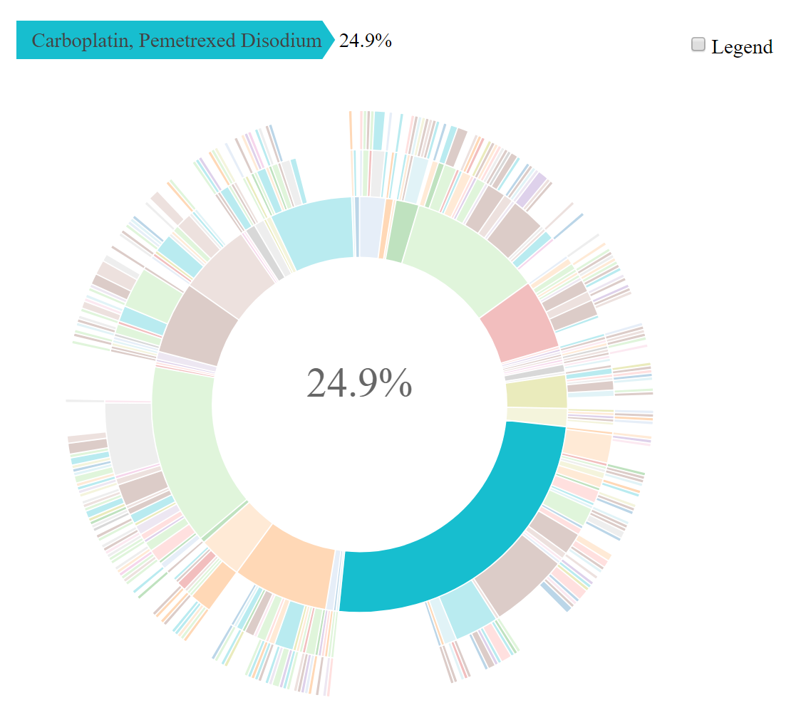

The American Association for Cancer Research Project Genomics Evidence Neoplasia Information Exchange Biopharma Collaborative (GENIE BPC) is an effort to aggregate comprehensive clinical data linked to genomic sequencing data to create a pan-cancer, publicly available data repository. These data detail clinical characteristics and drug regimen treatment information, along with high-throughput sequencing data and clinical outcomes, for cancer patients across multiple institutions. The GENIE BPC data repository forms a unique observational database of comprehensive clinical annotation with molecularly characterized tumors that can be used to advance precision medicine research in oncology. Linking multiple clinical and genomic datasets that vary in structure introduces an inherent complexity for data users. Therefore, use of the GENIE BPC data requires a rigorous process for preparing and merging the data to build analytic models. The {genieBPC} package is a user-friendly data processing pipeline to streamline the process for developing analytic cohorts that are ready for clinico-genomic analyses.
Installation
Install {genieBPC} from CRAN:
install.packages("genieBPC")Install the development version of {genieBPC} with:
remotes::install_github("GENIE-BPC/genieBPC")Overview of {genieBPC} Functions
Data import:
pull_data_synapse()imports GENIE BPC data from ‘Synapse’ into the R environment-
Data processing
-
create_analytic_cohort()selects an analytic cohort based on cancer diagnosis information and/or cancer-directed drug regimen information
-
select_unique_ngs()selects a unique next generation sequencing (NGS) test corresponding to the selected diagnoses
-
Data visualization:
drug_regimen_sunburst()creates a sunburst figure of drug regimen information corresponding to the selected diagnoses in the order that the regimens were administered
Data Access & Authentication
Access to the GENIE BPC data release folders on ‘Synapse’ is required in order to use this function. To obtain access:
For public data releases:
Register for a ‘Synapse’ account. Be sure to create a username and password. Note: do NOT connect via your Google account.
Accept the Synapse account terms of use.
Navigate to GENIE Biopharma Collaborative Public page.
In the Files folder, navigate to Data Releases and click on the cancer cohort and data release version of choice.
Select Request Access, review the terms of data use, and select Accept.
For consortium data releases (restricted to GENIE consortium members & BPC pharmaceutical partners):
Register for a ‘Synapse’ account. Be sure to create a username and password. Note: do NOT connect via your Google account.
Accept the Synapse account terms of use.
Use this link to access the GENIE BPC team list and request to join the team. Please include your full name and affiliation in the message before sending out the request. (Note: Please allow up to a week to review and grant access.)
Once the request is accepted, you may access the data in the GENIE Biopharma Collaborative projects.
In the Files folder, navigate to Data Releases and click on the cancer cohort and data release version of choice.
Select Request Access, review the terms of data use, and select Accept.
Note: permissions for Synapse and permissions for each data release are distinct. Both permissions must be accepted to successfully access the data.
Request a Synapse Personal Access Token (PAT):
Once you are logged into your Synapse account, you may request a Synapse personal access token (PAT).
In the left hand panel towards the bottom, click the button that shows the first letter of your first name. This button displays the text “Your Account” when hovered over and appears directly above the question mark button.
Next, select Account Settings and then scroll to the bottom of the page.
Under the “Personal Access Tokens” section, select Manage Personal Access Tokens.
On the “Personal Access Tokens” page, click on Create New Token to generate a Synapse Personal Access Token.
Specify a Token Name and click the checkbox that will allow you to Download the data, and then select Create Token.
Save your Synapse Personal Access Token in a secure location.
Authenticate yourself
Whether you are using public or consortium data, you will need to authenticate yourself at the beginning of each R session in which you use {genieBPC} to pull data (see set_synapse_credentials()), or store your credentials as environmental variables. See Tutorial: pull_data_synapse for more details.
Analytic Data Guides
The analytic data guides provide details on each analytic dataset and its corresponding variables for each data release.
Public Data Releases
NSCLC v2.0-Public Analytic Data Guide Released May 2022
CRC v2.0-Public Analytic Data Guide Released August 2022
Consortium Data Releases
Note that only GENIE BPC consortium users have access to the consortium releases.
Example
The following example creates an analytic cohort of patients diagnosed with Stage IV adenocarcinoma NSCLC.
Pull data for NSCLC version 2.0-public:
nsclc_2_0 <- pull_data_synapse(cohort = "NSCLC", version = "v2.0-public")Select stage IV adenocarcinoma NSCLC diagnoses:
nsclc_stg_iv_adeno <- create_analytic_cohort(data_synapse = nsclc_2_0$NSCLC_v2.0,
stage_dx = "Stage IV",
histology = "Adenocarcinoma")Select one unique metastatic lung adenocarcinoma genomic sample per patient in the analytic cohort returned above:
nsclc_stg_iv_adeno_unique_sample <- select_unique_ngs(
data_cohort = nsclc_stg_iv_adeno$cohort_ngs)Create a visualization of the treatment patterns for the first 3 regimens received by patients diagnosed with stage IV adenocarcinoma:
sunplot <- drug_regimen_sunburst(data_synapse = nsclc_2_0$NSCLC_v2.0,
data_cohort = nsclc_stg_iv_adeno,
max_n_regimens = 3)Example of a sunburst plot showing 3 treatment regimens, highlighting the first treatment regimen:

GENIE BPC Publications
Lavery JA, Brown S, Curry MA, Martin A, Sjoberg DD, Whiting K. A data processing pipeline for the AACR project GENIE biopharma collaborative data with the {genieBPC} R package Bioinformatics. Volume 39, Issue 1. 2023 Jan; doi: 10.1093/bioinformatics/btac796
Methodological Papers
Kehl KL, Lavery JA, Brown S, Fuchs H, Riely G, Schrag D, Newcomb A, Nichols C, Micheel CM, Bedard PL, Sweeney SM, Fiandalo M, Panageas KS; AACR Project GENIE BPC Core Team. Biomarker Inference and the Timing of Next-Generation Sequencing in a Multi-Institutional, Cross-Cancer Clinicogenomic Data Set. JCO Precis Oncol. 2024 Mar;8:e2300489. doi: 10.1200/PO.23.00489. PMID: 38484212; PMCID: PMC10954072.
Kehl KL, Uno H, Gusev A, Groha S, Brown S, Lavery JA, Schrag D, Panageas KS. Elucidating Analytic Bias Due to Informative Cohort Entry in Cancer Clinico-genomic Datasets. Cancer Epidemiol Biomarkers Prev. 2023 March; 32 (3): 344–352. doi: 10.1158/1055-9965.EPI-22-0875.
Brown S, Lavery JA, Shen R, Martin AS, Kehl KL, Sweeney SM, Lepisto EM, Rizvi H, McCarthy CG, Schultz N, Warner JL, Park BH, Bedard PL, Riely GJ, Schrag D, Panageas KS; AACR Project GENIE Consortium. Implications of Selection Bias Due to Delayed Study Entry in Clinical Genomic Studies. JAMA Oncol. 2022 Feb 1;8(2):287-291. doi: 10.1001/jamaoncol.2021.5153. PMID: 34734967; PMCID: PMC9190030.
Kehl KL, Riely GJ, Lepisto EM, Lavery JA, Warner JL, LeNoue-Newton ML, Sweeney SM, Rudolph JE, Brown S, Yu C, Bedard PL, Schrag D, Panageas KS; American Association of Cancer Research (AACR) Project Genomics Evidence Neoplasia Information Exchange (GENIE) Consortium. Correlation Between Surrogate End Points and Overall Survival in a Multi-institutional Clinicogenomic Cohort of Patients With Non-Small Cell Lung or Colorectal Cancer. JAMA Netw Open. 2021 Jul 1;4(7):e2117547. doi: 10.1001/jamanetworkopen.2021.17547. PMID: 34309669; PMCID: PMC8314138.
Lavery JA, Lepisto EM, Brown S, Rizvi H, McCarthy C, LeNoue-Newton M, Yu C, Lee J, Guo X, Yu T, Rudolph J, Sweeney S; AACR Project GENIE Consortium, Park BH, Warner JL, Bedard PL, Riely G, Schrag D, Panageas KS. A Scalable Quality Assurance Process for Curating Oncology Electronic Health Records: The Project GENIE Biopharma Collaborative Approach. JCO Clin Cancer Inform. 2022 Feb; 6:e2100105. doi: 10.1200/CCI.21.00105. PMID: 35192403; PMCID: PMC8863125.
Clinical Papers
Sanz-Garcia E, Brown S, Lavery JA, Weiss J, Fuchs HE, Newcomb A, Postle A, Warner JL, LeNoue-Newton ML, Sweeney SM, Pillai S, Yu C, Nichols C, Mastrogiacomo B, Kundra R, Schultz N, Kehl KL, Riely GJ, Schrag D, Govindarajan A, Panageas KS, Bedard PL. Genomic Characterization and Clinical Outcomes of Patients with Peritoneal Metastases from the AACR GENIE Biopharma Collaborative Colorectal Cancer Registry Cancer Res Commun. 2024 Feb 20;4(2):475-486. doi: 10.1158/2767-9764.CRC-23-0409. PMID: 38329392; PMCID: PMC10876516.
Choudhury NJ, Lavery JA, Brown S, de Bruijn I, Jee J, Tran TN, Rizvi H, Arbour KC, Whiting K, Shen R, Hellmann M, Bedard PL, Yu C, Leighl N, LeNoue-Newton M, Micheel C, Warner JL, Ginsberg MS, Plodkowski A, Girshman J, Sawan P, Pillai S, Sweeney SM, Kehl KL, Panageas KS, Schultz N, Schrag D, Riely GJ. The GENIE BPC NSCLC cohort: a real-world repository integrating standardized clinical and genomic data for 1,846 patients with non-small cell lung cancer Clin Cancer Res. 2023 May; doi: 10.1158/1078-0432.CCR-23-0580.